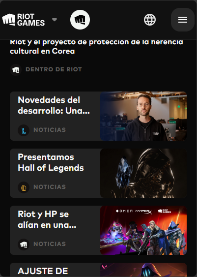
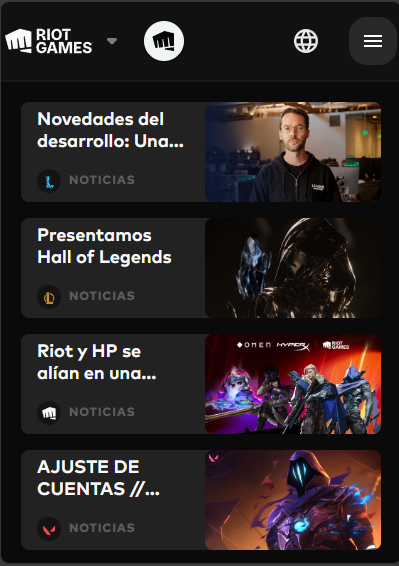

Contrast
Riot Games
riotgames.com The use of color in both background and color creates a good contrast highlighting important elements on the page. Also, the use of a color relative to the color scheme around it creates a great contrast highlighting it and attracting attention to it.
Proximity
Riot Games
riotgames.com As there are different sections on the page, it is designed as the different elements of that section are grouped together making the page look organized and clean.
Alignment
Minecraft
Minecraft.netBoth elements and text on the page are aligned in the same direction, as it is not just aligned randomly it makes the page look more organized and it is clear for the user, making it easier to read.